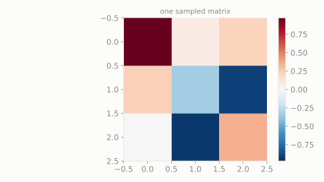

Randomly spinning (or sometimes mirror-flipping) a cube in space to a completely new orientation, with every possible orientation equally likely.
What does one such random orientation matrix look like?
scipy.stats.ortho_group
Not a distribution over numbers but over *rotations and reflections*: every possible way to rigidly rotate or flip space is equally likely. Multiplying any vector by one of these matrices spins or mirrors it without stretching or squashing it.
| parameter | default used here | meaning |
|---|---|---|
dim | 3 | dimension of the random orthogonal matrix |
Randomly spinning (or sometimes mirror-flipping) a cube in space to a completely new orientation, with every possible orientation equally likely.
What does one such random orientation matrix look like?
scipy.statsimport scipy.stats as stats
import numpy as np
dist = stats.ortho_group(dim=3)
sample = dist.rvs(random_state=0)
print('one random orthogonal matrix:')
print(np.round(sample, 3))